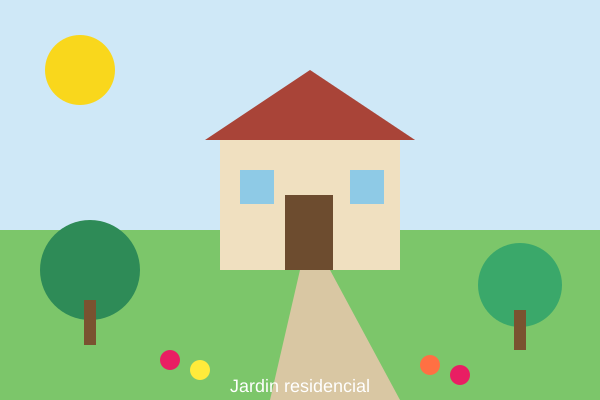
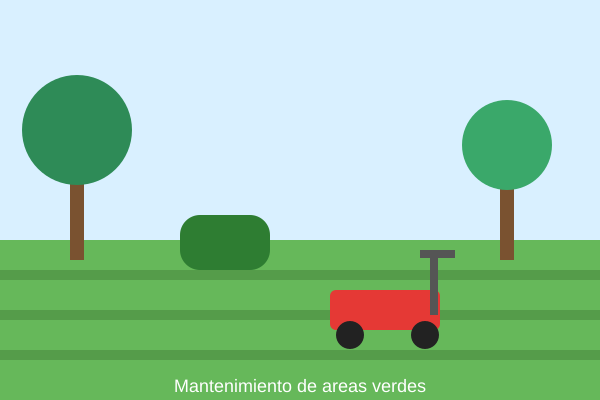

Jardinería Verde Vivo
Nos dedicamos al diseño, siembra y mantenimiento de jardines para casas, condominios y empresas. Trabajamos con plantas adecuadas al clima de la ciudad.


Nuestros servicios
| Servicio | Frecuencia | Precio (Bs) |
|---|---|---|
| Corte de césped (hasta 100 m²) | Quincenal | 80 |
| Poda de árboles y arbustos | Por visita | 150 |
| Diseño de jardín | Una vez | 500 |
| Mantenimiento mensual completo | Mensual | 300 |
Plantas que recomendamos
- Palmeras: resisten bien el calor.
- Rosales: dan color al jardín.
- Lavanda: aromática y necesita poca agua.
Horarios de atención
Atendemos de lunes a sábado de 8:00 a 18:00.